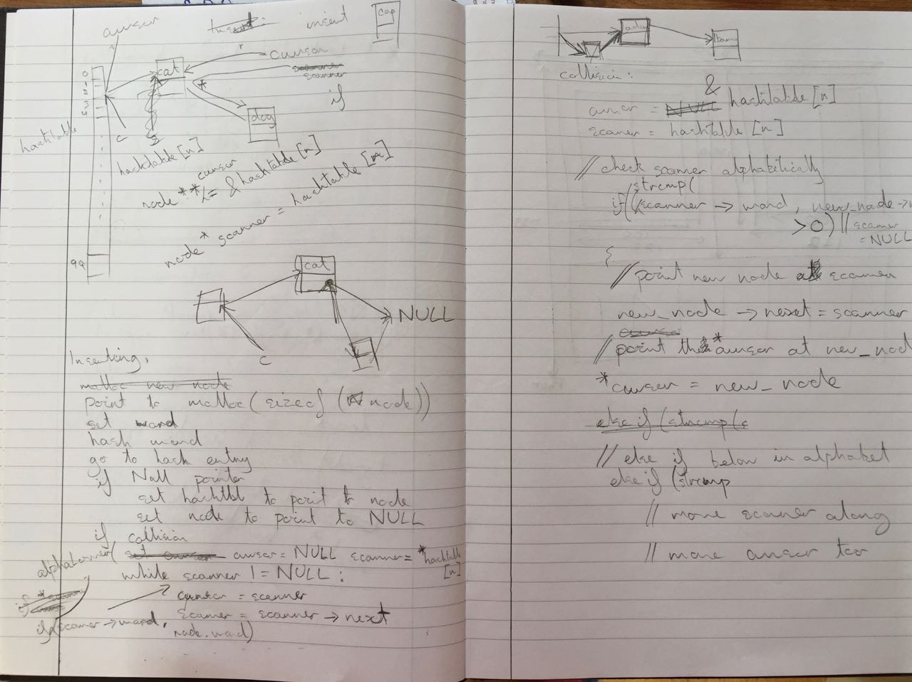

Hello and welcome to your first GCSE computer science homework!
In our lessons this week we looked at a way of expressing numbers which is a little different to the one we are used to, because it uses just two symbols instead of the usual ten. We refer to this new number system as "binary".
We also had a look at the way that we might want get started when we want to write some code, by thinking about the functions and the structure of the code at a very high level and then getting those thoughts down in a diagram or a pseudocode outline.
In this homework, we are going to combine together our knowledge of binary and our high level programming techniques to plan a program which will convert alphabetic strings into ones and zeroes, in a commonly used form called ASCII.
If you need a reminder of how the binary number system works, check out these videos from Khan academy. (Note that this is a playlist, not a single video. You can click the icon in the top left to see the next video).
Now you can have a play around on the "binary bulbs" web page, to make sure that you have really got the gist of how numbers are represented in binary.
Convert the following binary numbers into decimal (you may check your answers using 'binary bulbs'). Please clearly show your working (it doesn't matter if the working is messy.)
1) 11
2) 0
3) 11011
4) 1111111
5) 00000011
6) 00000000
7) 00011011
8) 01111111
Optional ninja question for lots of extra credit:
9) Convert 1111111111111111111111111111 into decimal and comment whether you think you used the fastest method to get there. Any method is allowed.
Convert the following decimal numbers into binary, giving all of your representations in 8-bit form. (Seriously, I will mark them wrong if there are more or fewer than 8 bits). Again, show your working.
10) 13
11) 67
12) 128
13) 255
14) 0
15) 129
16) 65
17) 126
Optional ninja question for even more extra credit:
18) Say I am programming a system to store the grades for all of my students and I create a list of 200 names for the purpose. One day I try to grab the 129th name from the list and instead it gives me the second name. What has happened to cause this bug and what do you think I could do to fix it?
So there is a good chance that the word 'algorithm' seems a bit scary to you. If it doesn't, great, you can skip this paragraph. For those of you still reading, the algorithm is nothing to sweat over. In fact if you have ever written a shopping list or assembled something from an instruction booklet, then you are already familiar with what at algorithm is. An algorithm is simply a set of instructions. We judge them on how well they achieve what they are trying to achieve. For example, a shopping list which groups similar items together is likely to be a better one than one which has them similar items all over the place. It is better simply because it makes you life easier when it actually comes to reading it in the shop (because similar items are usually in the same aisles of the supermarket).
Sure, you can write your instructions in English or you can write them in Python, Java, Perl, C, Swahili, Pashto or whatever. It is still just a set of instructions to be executed. That's all algorithm means.
Take some time to watch this video lesson on algorithms by David Malan (who happens to be the greatest educator of computer science in the world btw).
The message I want to get across to you this week is that you can't write good code without good planning (at least, not when the code is at all complicated). Mind maps, flow diagrams, and pseudocode are the bread and butter of the successful programmer, and it would be irresponsible to teach you to code without teaching you to plan first.
I still write up most of the algorithms I code in pseudocode before typing anyting up, usually with plenty of diagrams to go with them. I use flow diagrams when things are really tough. Here is a page of my notebook if you don't believe me:
Without further ado, let's get you started on the main part of this prep.
Given that everything inside a computer is represented in binary, people quickly realised that they needed a way to represent the alphabet in binary, which would allow computers to store not just numbers, but acutal words. ASCII is what they came up with.
To understand ASCII, you need to remember that all of those ones and zeroes inside the computer are split up into chunks of 8, and we call these chunks 'bytes'. ASCII assigns a byte value to each letter, along with a whole load of other symbols and characters, allowing us to store strings of characters, rather than just numbers.
Here's a video by Nate Hardison telling you all you could possibly want to know about ASCII:
Click here to view the full table of ASCII characters. Look out for the corresponding decimal (DEC) and binary (BIN) values in the table (as well as octal and hexadecimal which we'll talk about later). You can ignore the html stuff for now.
Your task is to plan a program which will prompt a user to enter their name and will then print that name out as a string of 1s and 0s, by converting each letter into its binary ASCII representation.
Start of by creating a flow diagram and then write up a pseudocode outline of your proposed program.
Feel free to use steps like "convert letter into binary", to avoid your plans becoming too detailed. Between five and ten lines of pseudocode should do the job thoroughly enough, but make sure you make clear which items need to be saved in memory (e.g. the person's name)
Finally, download my version of the program here and run it in IDLE to make sure that your proposed program would print out exactly the same thing.
Optionally, for those who are up to the challenge, write up your python program and submit it to me by email. Copying my solution is obviously not acceptable, and I expect your attemps to look different
And that's all for now. Well done on getting through your first CS homework. Now go and relax and wait for the next one.